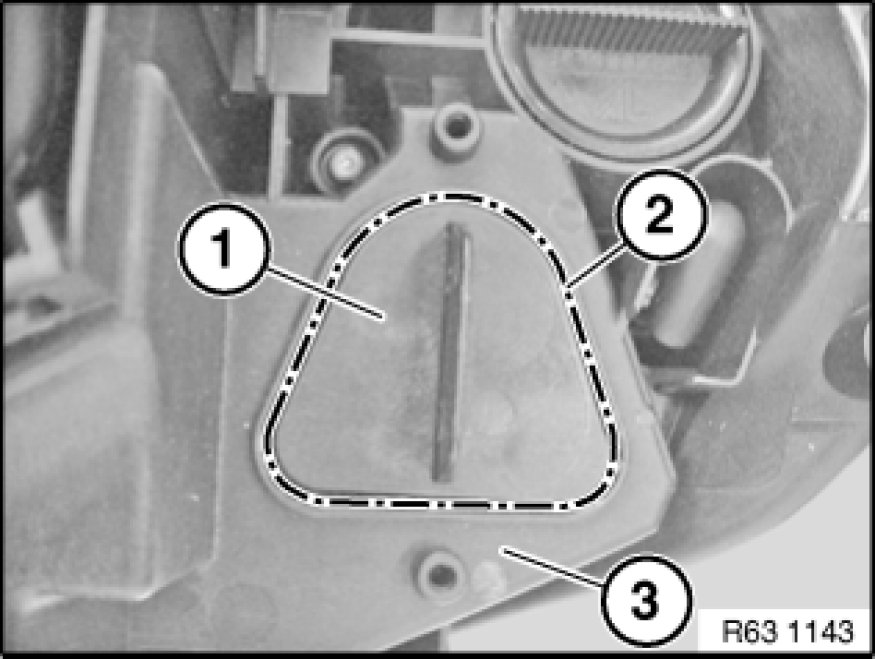

Replacing Drive/Electronics Box for Left Adaptive Headlight (After 09/06)
63 12 895 - Replacing drive/electronics box for left adaptive headlight (after 09/06)

Warning!
Version with xenon headlights: Danger to life due to high voltage! Therefore, before removing, disconnect all components from the power supply (lighting system and ignition off).
Work on the entire xenon lighting system (control unit, ignition unit with bulb) may only be carried out by specialist personnel.
Risk of injury!
Wear protective gloves when releasing the integral cover.

Important!
Risk of damage!
Do not make any cutting movements when removing the integral cover.
The cover may only be separated from the housing by punching. A groove of reduced wall thickness shows the punching line.
Cutting movements may damage cables inside the headlight.
The sealing edge must not be damaged.

Important!
Read and comply with notes on protection against electrostatic damage (ESD protection) 61 35 ... Notes on ESD Protection (Electro Static Discharge).

Necessary preliminary tasks:
- Remove left headlight Removing and Installing/Replacing Left Headlight (Xenon Headlight)

Removal:
Punch out integral cover (1) along line (2) with a suitable tool.
Feed integral cover (1) with drive/electronics box for adaptive headlight and mounting out of headlight (3).
Disconnect plug connection (1).
Remove drive/electronics box for adaptive headlight (3) with mounting (4) and cover (2).

Installation of drive/electronics box for adaptive headlight is described separately from removal.
Installation:
Assemble repair kit as follows:
1. Feed drive/electronics box for adaptive headlight (1) in direction of arrow into mounting (2)
- Drive/electronics box for adaptive headlight (1) must be seated in guides of mounting (2)
2. Attach mounting (2) with drive/electronics box for adaptive headlight (1) to cover (4).
- Drive/electronics box for adaptive headlight (1) must be seated in guide of cover (4)
3. Tighten screw (3). Tightening torque 63 12 11AZ [1][2]Headlamp.
4. Insert seal (5) in cover (4)
- Make sure seal (5) is correctly located in cover (4).
Close plug connection.
Insert drive/electronics box for adaptive headlight (1) with mounting (2) and cover (4) in headlight.
Tighten screws (6). Tightening torque 63 12 11AZ [1][2]Headlamp.

Carry out vehicle programming/coding Programming and Relearning.